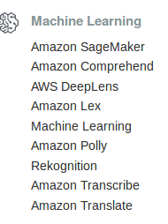
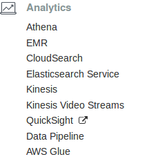

<!doctype html>
<html lang="en">

<head>
	<meta charset="utf-8">

	<title>ACTLabs: 2016 ACT Summer Camp</title>

	<meta name="description" content="A presentation on ACTLabs prototype">
	<meta name="author" content="Steve Polyak">

	<meta name="apple-mobile-web-app-capable" content="yes" />
	<meta name="apple-mobile-web-app-status-bar-style" content="black-translucent" />

	<meta name="viewport" content="width=device-width, initial-scale=1.0, maximum-scale=1.0, user-scalable=no">

	<link rel="stylesheet" href="css/app.css">
	<link rel="stylesheet" href="css/reveal.min.css">
	<link rel="stylesheet" href="css/theme/simple.css" id="theme">

	<!-- For syntax highlighting -->
	<link rel="stylesheet" href="lib/css/zenburn.css">

	<!-- If the query includes 'print-pdf', include the PDF print sheet -->
	<script>
		if( window.location.search.match( /print-pdf/gi ) ) {
			var link = document.createElement( 'link' );
			link.rel = 'stylesheet';
			link.type = 'text/css';
			link.href = 'css/print/pdf.css';
			document.getElementsByTagName( 'head' )[0].appendChild( link );
		}
	</script>
	<script type="text/javascript" async src="https://cdn.mathjax.org/mathjax/latest/MathJax.js?config=TeX-MML-AM_CHTML"></script>
</head>

<body>


	<div class="reveal">
		<div class="slides">
			<section data-markdown >
				<script type="text/template">
					## ACTNext 
					### Amazon re:Invent 2017
					#### New Machine Learning Overview
					* Date: Dec 7, 2017
					* Presenter: Steve Polyak
				</script>
				<aside class="notes">

				</aside>
			</section>

			<section  data-markdown >
				<script type="text/template">
					## Agenda
					<p>Talk about new Amazon Web Services (AWS) ML releases</p>
					<p>Amazon Sagemaker</p>
					<p>Amazon Comprehend</p>
					<p>Amazon Translate</p>
					<p>Amazon Transcribe</p>
					<p>AWS DeepLens</p>
					<p>Amazon Kinesis Video</p>
					<p>Amazon Rekognition Video</p>
					<p>AWS Greengrass ML Inference</p>				
					# 
				</script>
				<aside class="notes">
				</aside>
			</section>

			<section  data-markdown >
				<script type="text/template">
					## Agenda
					<p>Honorable Mentions</p>
					<p>Amazon Sumerian</p>
					<p>AWS Fargate</p>
					<p>Amazon Neptune</p>
					<p>Amazon Aurora Serverless</p>
					<p>AWS Cloud9</p>					
					# 
				</script>
				<aside class="notes">
				</aside>
			</section>			
			
			<section  data-markdown >
				<script type="text/template">
					
					<p>AWS Console</p>
					# 
				</script>
				<aside class="notes">
				</aside>
			</section>


			<section  data-markdown >
				<script type="text/template">
					
					<p>AWS Console</p>
					# 
				</script>
				<aside class="notes">
				</aside>
			</section>

			<section  data-markdown >
				<script type="text/template">
<p>
Amazon SageMaker is a fully-managed service that enables all to quickly and easily build, train, and deploy machine learning models at scale. three modules: Build, Train, and Deploy. </p>
<ul>
<li>The Build module provides a hosted environment to work with your data, experiment with algorithms, and visualize your output. </li>
<li>The Train module allows for one-click model training and tuning at high-scale and low cost. </li>
<li>The Deploy module provides a managed environment for you to easily host and test models for inference securely and with low latency. Amazon SageMaker removes the complexity that holds back developer success with machine learning. </li>
</ul>
</script>
</section>

			<section class="stack" data-markdown data-background="img/sm1.png">
			</section>
			<section class="stack" data-markdown data-background="img/sm2.png">
			</section>
			<section class="stack" data-markdown data-background="img/sm3.png">
			</section>

		</div>
	</div>

<script src="lib/js/head.min.js"></script>
<script src="js/reveal.min.js"></script>

<script>

// Full list of configuration options available here:
// https://github.com/hakimel/reveal.js#configuration
Reveal.initialize({
	controls: true,
	progress: true,
	history: true,
	center: true,

	theme: 'blood',// Reveal.getQueryHash().theme, // available themes are in /css/theme
	transition: Reveal.getQueryHash().transition || 'page', // default/cube/page/concave/zoom/linear/fade/none
	multiplex: {
        // Example values. To generate your own, see the socket.io server instructions.
        secret: '13967773486226648665', // Obtained from the socket.io server. Gives this (the master) control of the presentation
        id: 'c6dc216ec61365eb', // Obtained from socket.io server
        url: 'revealjs.jit.su:80' // Location of socket.io server
    },
    math: {
    	mathjax: 'http://cdn.mathjax.org/mathjax/latest/MathJax.js',
    	config: 'TeX-AMS_HTML-full' // See http://docs.mathjax.org/en/latest/config-files.html
	},
	// Parallax scrolling
	// parallaxBackgroundImage: 'img/om.jpg',
	// parallaxBackgroundSize: '2100px 900px',
	// Optional libraries used to extend on reveal.js
	dependencies: [
		{ src: 'lib/js/classList.js', condition: function() { return !document.body.classList; } },
		{ src: 'plugin/markdown/marked.js', condition: function() { return !!document.querySelector( '[data-markdown]' ); } },
		{ src: 'plugin/markdown/markdown.js', condition: function() { return !!document.querySelector( '[data-markdown]' ); } },
		{ src: 'plugin/highlight/highlight.js', async: true, callback: function() { hljs.initHighlightingOnLoad(); } },
		{ src: 'plugin/zoom-js/zoom.js', async: true, condition: function() { return !!document.body.classList; } },
		{ src: 'plugin/notes/notes.js', async: true, condition: function() { return !!document.body.classList; } },
		{ src: '//cdnjs.cloudflare.com/ajax/libs/socket.io/0.9.10/socket.io.min.js', async: true },
		{ src: 'plugin/multiplex/master.js', async: true },

        // and if you want speaker notes
        //{ src: 'plugin/notes-server/client.js', async: true },
        { src: 'plugin/math/math.js', async: true }
	]
});

</script>
<script type="text/x-mathjax-config">
MathJax.Hub.Config({
  MathML: {
    extensions: ["content-mathml.js"]
  }
});
</script>


</body>
</html>
